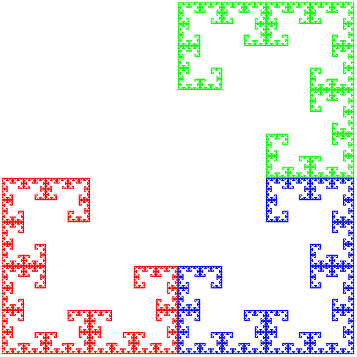
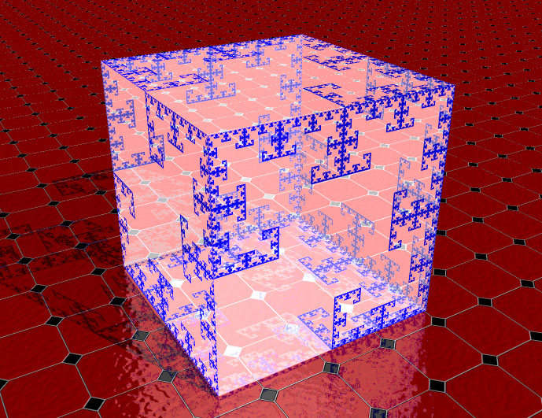

Pascals Triangle in Gray Code:
its Hadamard and IFS
By Roger Bagula and Gary Adamson
Compiled and graphics by Paul Bourke
6 October 1998
Basic source code --
C source code


Although the two programs in this article are mine, I have to admit that I haven't been paying good attention
to Gary Adamson on Gray codes. There is no doubt that he is one of the world's experts in this field of number
theory and codes. In two articles of his he has done the same as M. C. Er in generating n-ary Gray codes and
getting the Pascal's triangle binary equivalent! What I have done is recognize the pattern. Programed up the
IFS first. and then searched the net for a binary to Gray code procedure which I found in at least three places.
My original contribution is to convert the Hadamard version of Pascal's triangle into Gray code and get the
same thing Gary Adamson did! We have found a pattern like Sierpinski's gasket that is ``general'' to the
nature of the numbers. That it too has higher order results like those of Sierpinski sets is not, then, a surprise.
It appears to just be a different way to look at the same numbers and find a pattern in them.
|